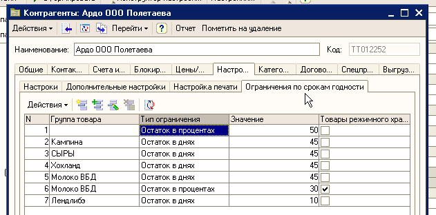
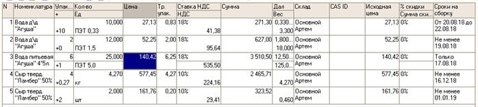
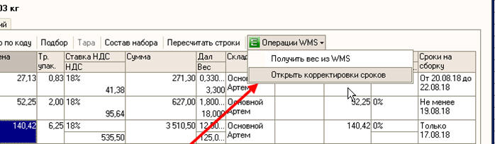
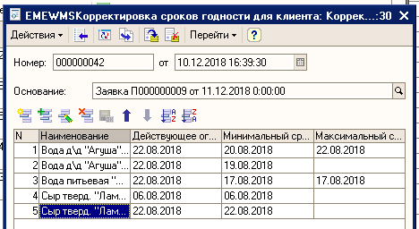
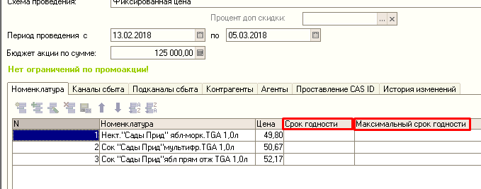

Подбор товаров по срокам годности в WMS.
С приходом на филиал WMS у операторов и бухгалтеров, появляется возможность точно указывать, какие сроки годности должны быть собраны складом в документах «Заявка», «Сводная накладная», «Накладная», «Списание» и «Перемещение».
Часть 1. Базовые требования к срокам годности.
На этапе внедрения WMS на филиале согласуются минимальные остаточные сроки годности для товаров. Как правило изначально они имеют такие значения:
- Заявки, Сводные, Перемещения: Не менее 21 дня для обычных товаров и не менее 5 дней для скоропортящегося товара.
- МСП: Не менее 2 месяцев. Можно задать любое единое значение для всех МСП на филиале.
- Прочие накладные: Каких-либо требований по сроку годности нет.
- Списания. Проставляется срок годности «день-в-день» с датой списания. Необходимо прописывать сроки вручную!!!
Данные значения можно менять в любое время, согласовав его с директором филиала. Внесением данных занимаются специалисты WMS.
Часть 2. Требования клиентов.
Всё, что написано в этой части применимо только к документам «Заявка» и «Сводная накладная».
Если с торговой точкой заключён постоянный договор на поставку хороших сроков годности, то эта информация должна быть внесена в 1С в карточку клиента. Данные вносятся на вкладке «Настройки» - «Ограничения сроков годности».

Посмотреть все внесённые в систему требования клиентов можно открыв отчёт «Отчёты – Отчёты по расчётам с клиентами – Отчёт по ограничениям сроков годности».
При внесении данных в карточку клиента следует руководствоваться следующими правилами:
- Если договор с клиентом касается всех групп товаров, то поле «Группа товара» должно оставаться пустым.
- Если договор с клиентом затрагивает только определённые группы товаров, то следует выбрать именно эти группы.
- Если для одной из групп товаров будет указано 2 и более ограничений, то будет выбрано то, которое находится ниже по иерархии справочника «Номенклатура». Пример: если для группы «*Товар основной (пиво)» указано «Остаток в днях - 50 дней», а для вложенной в неё группы «Пиво Ж/Б» указано «Остаток в днях – 30 дней», то для Ж/Б пива будет действовать ограничение 30 дней, а для всего остального пива– 50 дней.
- Есть контракты, которые содержать, как товары длительного хранения, так и скоропорт. Если необходимо указать требование клиента именно к скоропортящейся продукции в пределах одной группы – то в требования нужно добавить дополнительную строку и поставить галочку «Товары режимного хранения». Смотри пример с Молоком ВБД из картинки выше.
Прошу обратить внимание, что если для группы товаров указать, например, «Не менее 80%» остаточного срока годности, то именно такие сроки годности будут подбираться, НЕ МЕНЬШЕ НИ НА ОДИН ДЕНЬ. Это значит, что если сегодня 1 февраля, а у товар срок жизни 1 год, то WMS будет подбирать сроки такому клиенту не менее, чем 20 ноября! А это значит, что будут или огромные недопоставки, или оператор утонет в корректировках.
Часть 3. Внесение корректировок.
Всё, что написано в этой части применимо к документам «Заявка», «Накладная», «Перемещение» и «Списание».

В табличной части перечисленных документов добавлена новая колонка «Сроки на сборку». Эта колонка отображает сроки годности с учётом всех применённых к документу правил. Колонка заполняется автоматически и напрямую менять в ней значение не получится. Возможны 3 варианта заполнения этой колонки:
- Интервал. Пример из изображения выше в строке №1 – «От 20.08.2018 до 22.08.2018». Такая надпись говорит о том, что склад сможет собрать товар со сроком годности который попадает в диапазон указанных сроков включая граничные значения и никакой другой.
- Ограничение с меньшей стороны. Пример из изображения выше в строке №2. «Не менее 19.08.2018». Такая надпись говорит о том, что склад сможет собрать по этой заявке товар со сроками годности не менее указанных следуя правилу FEFO.
- Строгое ограничение. Пример из изображения выше в строке №3. «Только 17.08.2018». Такая надпись говорит о том, что склад не сможет собрать никакие другие сроки кроме указанного. Даже если разница будет в 1 день.
Если по каким-либо причинам приведённые значения необходимо изменить, то для этого в заголовке таблицы есть кнопка «Операции WMS – Открыть корректировки сроков»:

Нажатие на эту кнопку откроет документ «Корректировка сроков годности» и позволит задать те сроки, которые просит, например, отдел продаж.

Здесь оператор или бухгалтер могут задать те сроки годности, которые склад должен собрать. Редактировать можно только колонки таблицы «Минимальный срок» и «Максимальный срок». Правила простые:
- Если заполнить колонку «Минимальный срок», а колонку «Максимальный срок» оставить пустой – то склад будет собирать сроки не меньше минимальных по правилу FEFO.
- Если заполнить обе колонки и при этом значение в колонке «Максимальный срок» будет больше, чем в колонке «Минимальный срок», то склад будет собирать товары со сроками годности из указанного диапазона придерживаясь правила FEFO.
- Если заполнить обе колонки и при этом значения в колонках «Минимальный срок» и «Максимальный срок» будут одинаковые – то склад сможет собрать строго тот срок годности, который будет указан.
- Другие варианты недопустимы и у вас просто не получится провести документ.
После проведения документа «Корректировка сроков годности», значения, указанные в колонке «Сроки на сборку» родительского документа будут обновлены автоматически.
При необходимости ввести дополнительные корректировки или исправить уже сделанные достаточно будет нажать на кнопку «Операции WMS – Открыть корректировки сроков» ещё раз и будет открыт созданный ранее документ «Корректировка сроков годности».
Если на складе отсутствуют те сроки годности, которые написаны в колонке «Сроки на сборку» - то такая строка будет подсвечена красным цветом (ЭТА ФУНКЦИЯ ПОКА В РАЗРАБОТКЕ).
Часть 4. Промоакции.
Всё, что написано в этой части применимо только к документам «Заявка» и «Накладная».
Если промоакция предполагает отгрузку клиентам товаров с определёнными сроками годности, то эти сроки годности следует указать в документе «Проведение промоакций» для каждой строки товара.

Правила те же, что и в документе «Корректировка сроков годности»:
- Если не заполнять обе колонки «Срок годности» и «Максимальный срок», то такая промоакция никак не будет влиять на сроки годности, которые склад должен будет собрать.
- Если заполнить колонку «Срок годности», а колонку «Максимальный срок» оставить пустой – то склад будет собирать сроки не меньше минимальных по правилу FEFO.
- Если заполнить обе колонки и при этом значение в колонке «Максимальный срок» будет больше, чем в колонке «Срок годности», то склад будет собирать товары со сроками годности из указанного диапазона придерживаясь правила FEFO.
- Если заполнить обе колонки и при этом значения в колонках «Срок годности» и «Максимальный срок» будут одинаковые – то склад сможет собрать строго тот срок годности, который будет указан.
Часть 5. Приоритет применения правил.
Правила будут расположены в порядке возрастания их приоритета.
- Базовые требования к срокам годности. Имеют минимальный приоритет, но применяются к абсолютно всем отгрузкам со склада.
- Требования клиентов. Применяется только к заявкам. Если у клиента из заявки есть требования к срокам годности, то сначала будут применены они. Базовые требования при этом будут проигнорированы.
- Корректировки. Внесение корректировок для строк документа автоматически заставляет WMS подбирать только те сроки, что были указаны в корректировке. Требования клиентов и базовые требования к срокам годности при этом полностью игнорируются для тех строк заявки, где они были внесены.
- Промоакции. Имеют максимальный приоритет и ничто не может повлиять на те сроки годности, которые будут указаны в документе «Проведение промоакций».